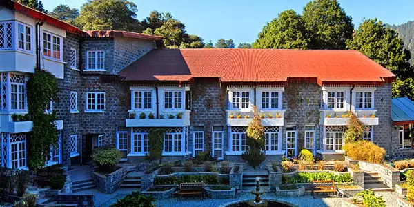

Nainital
"Finding peace in the heart of the Lake City
"Finding peace in the heart of the Lake City



Hotels in Nainital
Nainital offers a mix of Kumaoni and North Indian food, known for its street food, cafes, and traditional dishes.
Cost: ₹4,000 – ₹8,000 per person
Duration: 2–4 days for complete trip
Nainital is a popular hill station in Kumaon, known for Naini Lake, colonial charm, and views of the surrounding mountains. It is ideal for boating, short treks, and relaxed family holidays.